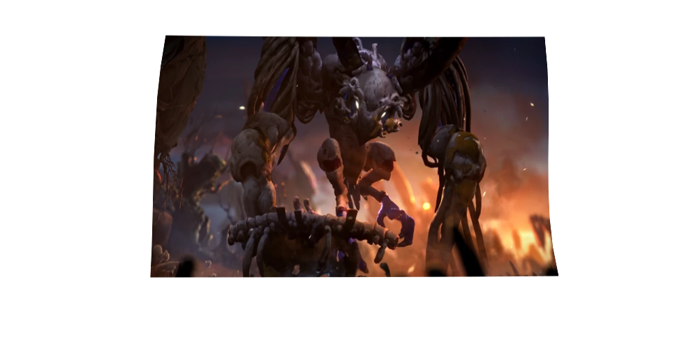

Ori and the Will of the Wisps: A Journey of Purpose and Sacrifice
Few games combine breathtaking visuals, compelling gameplay, and deeply emotional storytelling
as Ori and the Will of the Wisps. As the sequel to Ori and the Blind Forest, this game elevates every aspect of its
predecessor. It introduces richer world-building, refined mechanics, and a narrative that speaks to the essence of
sacrifice and purpose. At its core, Ori and the Will of the Wisps is not just an adventure, but a profound
meditation on resistance, loss, and the bonds that shape us.
Charcters
Ori
Ori is the heart of the game, a luminous spirit guardian whose journey is filled with trials that
test courage and resilience. Ori's unwavering determination to protect those they love drives the emotional
core of the story and find the missing owl named Ku.
center>
Ku
Introduced as Ori's companion, Ku is a young owl whose bond with Ori is at the heart of the game's
emotional narrative. Her journey symbolizes the importance of trust and perseverance in adversity.
She also has a wing that was infected due to the events that happened in the prequel Ori and the Blind Forest
center>
Naru & Gumo
Found family is also important. Naru and Humo, returning from the first game, provide an emotional foundation.
A reminder that love is not only about protection but about shared struggles and unwavering support. And they so much
love for the Ori and Ku to go find them in the new area, that are located called Niwen.
center>
Kwolokcenter>
Kwolok is a towering amphibian who serves as the guardian of the marsh. Unlike many others in Niwen,
he retains his wisdom and compassion despite the corruption spreading through the land. He guides Ori, offering
insights that help shape the journey, making him one of the few truly benevolent figures in the game. However,
his fate is tragic; his battle against the Foul presence ultimately consumes him, reinforcing the theme that
even the strongest must make sacrifices for the greater good.
center>
Shriek
center>

Shriek is the most tragic figure in Ori and the Will of the Wisps. Born into a world of decay, she was abandoned
and forced to survive in isolation/ Her hostility toward Ori is not driven by malice but by deep-seated pain.
As the primary antagonist, Shriek represents the consequences of cruelty and abandonment, showing how a creature formed by
suffering can struggle with redemption.
center>
Synopsis: A World on the Brink
Niwen is a land in deca, its balance disrupted by the corruption consuming its heart. As Ori sets out to reunite
with Ku, they become entangled in a larger struggle, the fate of the land itself. The journey leads Ori across vibrant landscapes,
from eerie ruins to lush forests, each filled with secrets and challenges. Along the way, Ori must make painful choices, proving
that sacrifice is not simply about loss but about ensuring something greater can endure. The resolution of the story cements the
game's overarching themes: purpose is found not in self-preservation but in what we give to others.
Bosses: Gurdians and Foes of Niwen
Howl: The Feral Beast
Encountered early in Inkwater Marsh, Howl is the first major foe Ori faces. A savage, wolf-like creature, Howl
sets the tone for the dangers ahead, forcing Ori to quickly adapt to combat mechanics and defensive manevers.
Watch the Howl boss fight here:
Hornbug (Horn Beetle): The Relentless Charger
Deep within Kwolok's Hollow, Ori faces the Hornbug, a powerful enemy that relies on brute force and charging
attacks. This encounter tests Ori's ability to dodge and counterattack efficiently. Watch the Hornbug boss fight here:
Kwolok: The Corrupted Gurdian
While Kwolok serves as an important mentor figure, the story takes a tragic turn when he falls victim to corruption or the creature
that he ran away from when retrieving the water. Ori is forced to battle him, an emotional fight that contrasts with his earlier wisdom
and protection. His corruption is not a personal failing but a consequence og the relentless decay affecting Niwen. His loss serves as a
heartbreaking moment that reinforces the idea that even the noble will make a sacrifice for the good of others. Watch the
Kowolok boss fight here:
Mora: The Nightmare of Mouldwood Depths
In the eerie, pitch-black Mouldwood Depths, Ori encounters Mora, a spider that
thrives in the darkness was corrupted by the decay, causing her to lose her mind. The battle requires precise movement
and mystery of light-based mechanics, as the arena remains perilously dark, which will harm you throughout the encounter.
Watch the Mora boss fight here:
Willow Stone:The Final Gatekeeper
As Ori nears the end of their journey in Willow's End, they must defeat Willow Stone, a formidable mini-boss that
guards the entrance to the spirit Willow. The encounter serves as a final challenge before facing Shriek. Watch the
Willow Stone boss fight here:
Shriek: The Tormented Shadow
Shriek is the final boss and the most tragic boss to fight in the game. Born into an unforgiving world of loss of rejection. The battle
against shriek unfolds in three phases, each demanding precise movement and strategy. Her defeat is not a triumphant victory but a sorrowful
conclusion to a creature shaped by suffering. Watch the Shriek boss fight here: